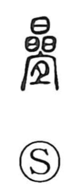

畳

Uncategorized
Kun: tatami, tatamu, tatameru | On: jo
tatami mat ・ to fold ・ to pile up ・ to stack
Explanation
The original form is 疊, a compound graph that brings together the jade element multiplied—signifying a heap of jade—and 宜, which Shirakawa interprets as two cuts of meat set out on a chopping board. The picture is of valuable offerings, jade and meat, laid up in layers. From this scene of heaping and arranging came the meanings “to pile up” and, by extension, “to fold up.” In Japanese usage the character also came to denote the woven floor mat, the tatami.